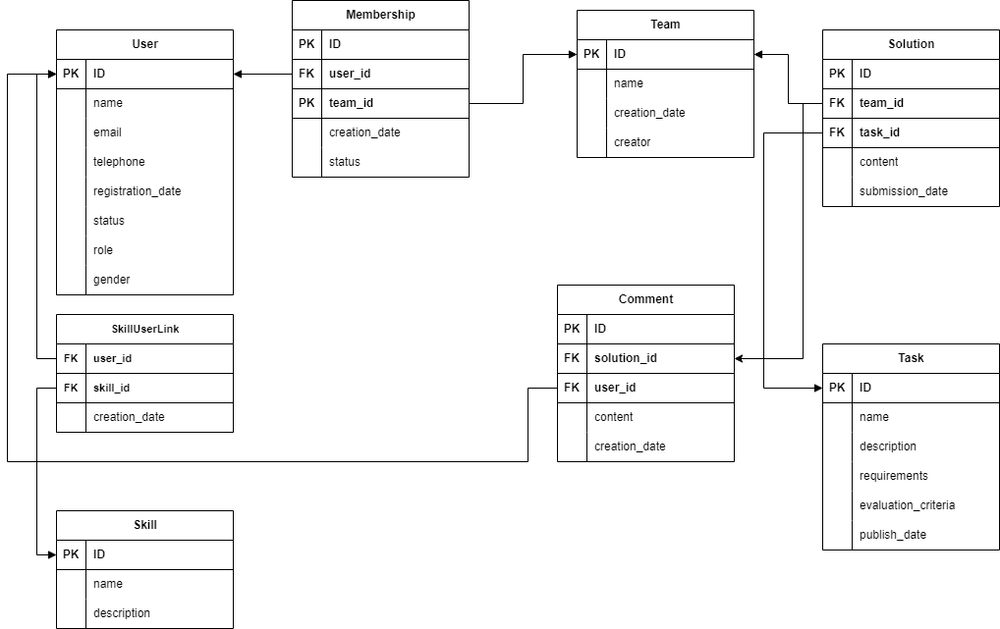

Тема
Описание
Создание системы для проведения хакатонов: Задача состоит в разработке программной системы, которая будет использоваться для организации и проведения хакатонов. Хакатон - это соревнование, на котором участники, как правило, программисты, дизайнеры и бизнес-специалисты, работают над проектами в течение определенного времени, решая поставленные задачи или разрабатывая новые идеи. Система должна предоставлять следующий функционал:
- Регистрация участников: Участники должны иметь возможность зарегистрироваться на хакатон, указав свои данные (имя, адрес электронной почты, контактный номер и т. д.). После регистрации участники должны получить подтверждение от организаторов.
- Формирование команд: Участники должны иметь возможность создавать команды или присоединяться к уже существующим. Команды могут состоять из участников с различными навыками (программирование, дизайн, маркетинг и т. д.).
- Публикация задач: Организаторы хакатона должны иметь возможность публиковать задачи или проекты, над которыми будут работать участники. Каждая задача должна содержать описание, требования и критерии оценки.
- Оценка работ: Участники должны иметь возможность загружать свои работы и прототипы для оценки.
Модель данных
